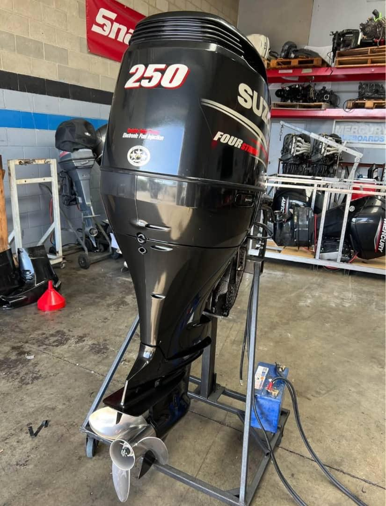

OUTBOARD SALES LISTING
2021 Suzuki DF250TXW
250 HP • 30-inch XXL shaft

LISTING OVERVIEW
Outboard details
at a glance.
A 250 HP Suzuki V6 outboard configured for a 30-inch transom. The seller listing reports 310 engine hours, a clean ECU scan with no fault codes or over-rev history, and a recent preventative-maintenance refresh.
The seller describes Suzuki Precision Control drive-by-wire operation and variable valve timing. The listing reports that the engine was checked during intake and received preventative maintenance, including a new water-pump impeller, spark plugs and internal zinc anodes.
SELLER-PROVIDED DETAILS
Full listing description.
The seller describes this 2021 Suzuki DF250TXW as a 250 HP V6 outboard with 310 reported hours and a 30-inch XXL offshore shaft. It is equipped for Suzuki Precision Control drive-by-wire operation, and the listing describes smooth shifting and responsive throttle control. The seller says the engine was checked with an ECU diagnostic scan that returned no fault codes and showed no over-rev history.
The listing also reports preventative maintenance that includes replacement internal zinc anodes, spark plugs and a water-pump impeller. The variable valve timing system is reported to operate as intended. The seller further notes that the oil analysis passed without contaminants being found. A propeller is not included, although the seller says one may be sourced on request.
SPECIFICATIONS
Detailed product information.
Specifications and condition notes are seller-reported. Contact Skegsmith Marine to confirm details and current availability before purchase.
| Specification | Details |
|---|---|
| Year | 2021 |
| Make Model | Suzuki DF250TXW V6 |
| Rated Power | 250 HP |
| Engine Hours | 310 Hours |
| Shaft Length | 30 Inches XXL Offshore |
| Diagnostic Scan | Clean; no fault codes reported |
| Over-rev History | No over-rev history reported |
| Maintenance | New water-pump impeller, spark plugs and internal zinc anodes |
| Oil Analysis | Passed; no contaminants reported |
| Controls | Suzuki Precision Control drive-by-wire harness included |
| Propeller | Not included; seller says one may be sourced on request |
WANT TO KNOW MORE?
Let’s talk about
this outboard.
Contact Skegsmith Marine to ask about this listing, current availability or the next step.